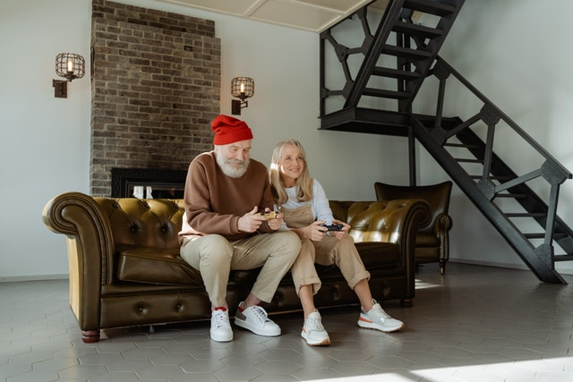

The Benefits
As people age and approach retirement they often start to lack the mental stimulation that they had experienced their entire working career. Instead, they find themselves, especially in the winter months, spending more and more time in front of the television. Some television is not so bad but to much of the wrong kinds of television can cause a lack of mental stimulation. In order to keep your mind sharp you need to keep it active. Some work puzzles, crosswords or card games. This is great, but there is an entire world of interactive entertainment that is constantly changing. By having new problems to work out and new exciting visual experiences our members are able to keep their minds sharp. They don’t have to worry about reworking the same puzzles when they run out of puzzles. We offer a library of video games that they can play solo or in a social setting. We encourage our members to experience many types of games and to experience the electronic worlds around them. What we offer here at the Golden Gamers Center is a judgment free environment for our gamers. We know that some people have not played modern games before and might be a little hesitant. Some get easily frustrated with technology and give up when they cannot get it to work. Here at Golden Gamers have people on staff at all times that are willing to sit down and help you as you learn the technology so that you feel comfortable at all times. No one should give up gaming due to frustration with the technology. As such we can sit with you any time and help explain the technology or the game with you as you play. And for those more tech savvy we can be as hands off as you wish.
 Our cafeteria offers a wide variety of delicious, healthy food options. We have food to fit the dietary needs of all our members. Everything from a nutritious club and chef salads, to a good old fashion sandwich. We can accommodate almost any dietary need that you might have. Our lunches have a cost per meal, but that cost is nothing more than the cost of the items, no profit made on the food. If you qualify for a food subsidy such as meals on wheels, just let us know. We are an approved provider of meals on wheels and can provide you the meals you need each day.